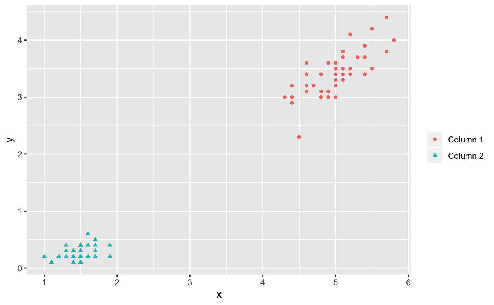
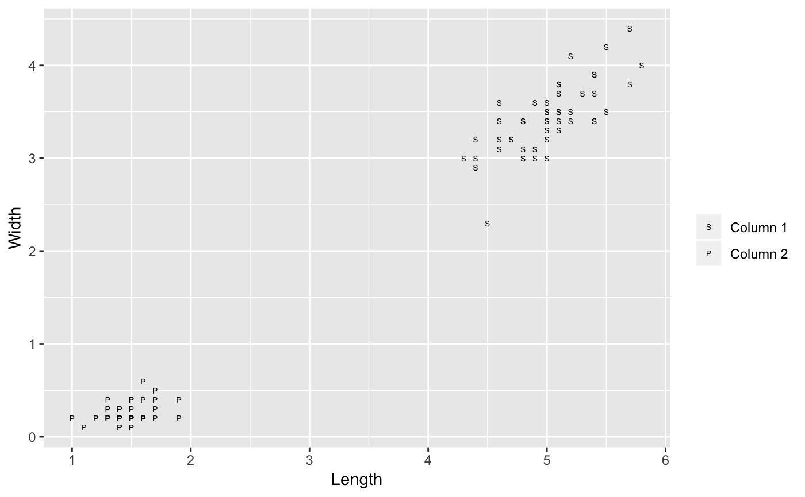

The goal of ggmatplot is to plot the columns of one matrix against the columns of another.
Installation
You can install the released version of ggmatplot by the following commands:
Below are some basic examples which show you how to use this package.
Example 1
X <- 1:10
Y=X^2
Z=X^2-2*X
# Original way by matplot function
matplot(X,cbind(Y,Z),pch=c(16,1),xlab="x",ylab="X^2 and X^2-2*X")
legend(1,100,legend=c("y","Z"),pch=c(16,1)) 
# Use ggmatplot
ggmatplot(X,cbind(Y,Z), shape = c(16,1),legend_label = c("X^2","X^2-2*X"),legend_title = "",geom=c("point","line"))
Example 2: Iris data
iris_sub <- subset(iris, Species == "setosa")
# Original way by matplot function
matplot(iris_sub[,c(1,3)], iris_sub[,c(2,4)])

# Modify legend label and axis
ggmatplot(iris_sub[,c(1,3)], iris_sub[,c(2,4)], shape = c("S","P"), legend_label = c("Sepal","Petal"), legend_title = "", xlab = "Length", ylab="Width")